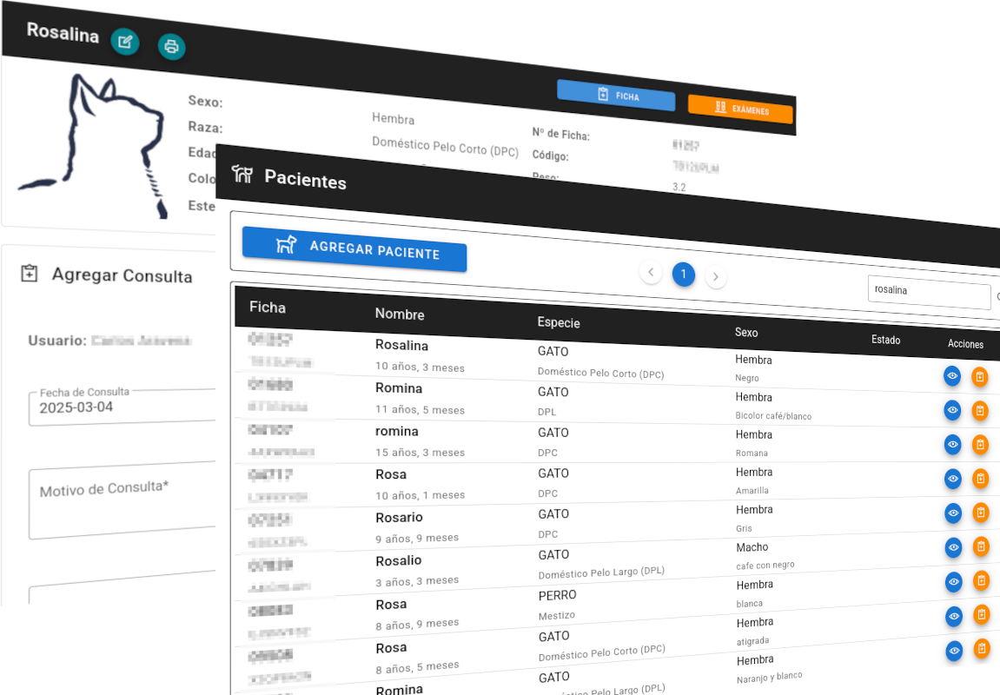
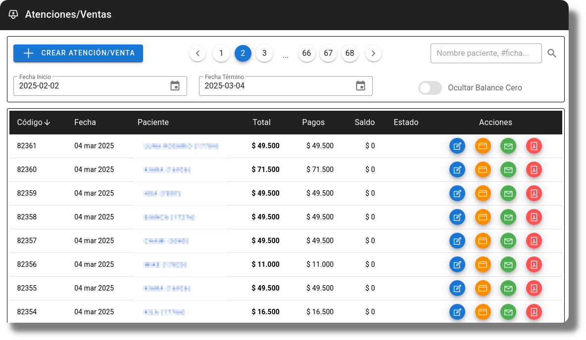
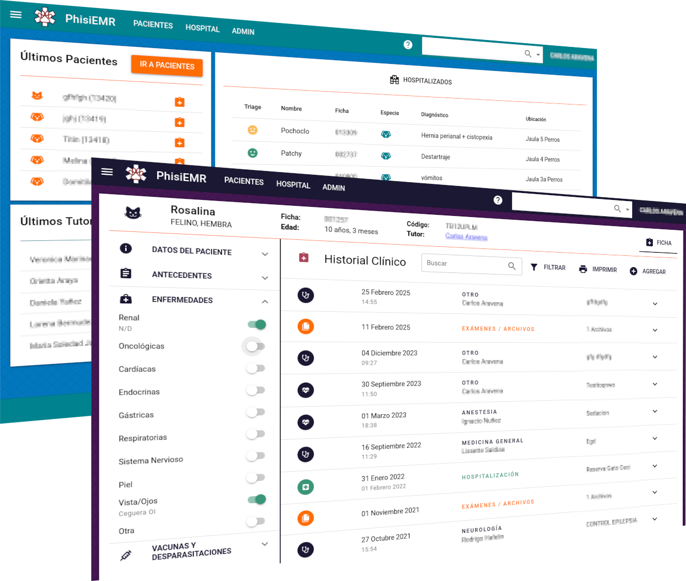

Nacido directamente de la operación real de un hospital veterinario, nuestro principal foco es ser un sistema de gestión de fichas clínicas. Medicina primero, inventarios después.
Ponemos especial énfasis en interfaces intuitivas y accesibles. Poderoso, pero sin miles de opciones que nadie usa.
Nuestro sistema es web, opera en la nube y es compatible con todos los dispositivos. Trabaja desde cualquier lugar, en tu celular, o computador. Sólo necesitas internet.


Con orgullo presentamos PhisiEMR 2.0, el resultado de cinco años de experiencia y retroalimentación directa de nuestros usuarios. Esta nueva versión representa un salto significativo en tecnología y usabilidad, ofreciendo una experiencia completamente renovada para la gestión veterinaria moderna.

Más moderna e intuitiva. Mejores búsquedas y flujos de ingresos de datos más rápidos y a prueba de errores.
Módulo de hospitalización renovado y agendamiento online
Más información de casos médicos y ventas. Informes editables en Excel y Docx. Nuevos certificados de defunción y recetas
Gestión de usuarios, configuración de datos de la clínica, selección de temas, y mucho más.
Si eres cliente puedes probar la nueva versión de PhisiEMR aquí
Acceso Nueva Versión(*) Plataforma en desarrollo, algunas funciones pueden no estar disponibles.